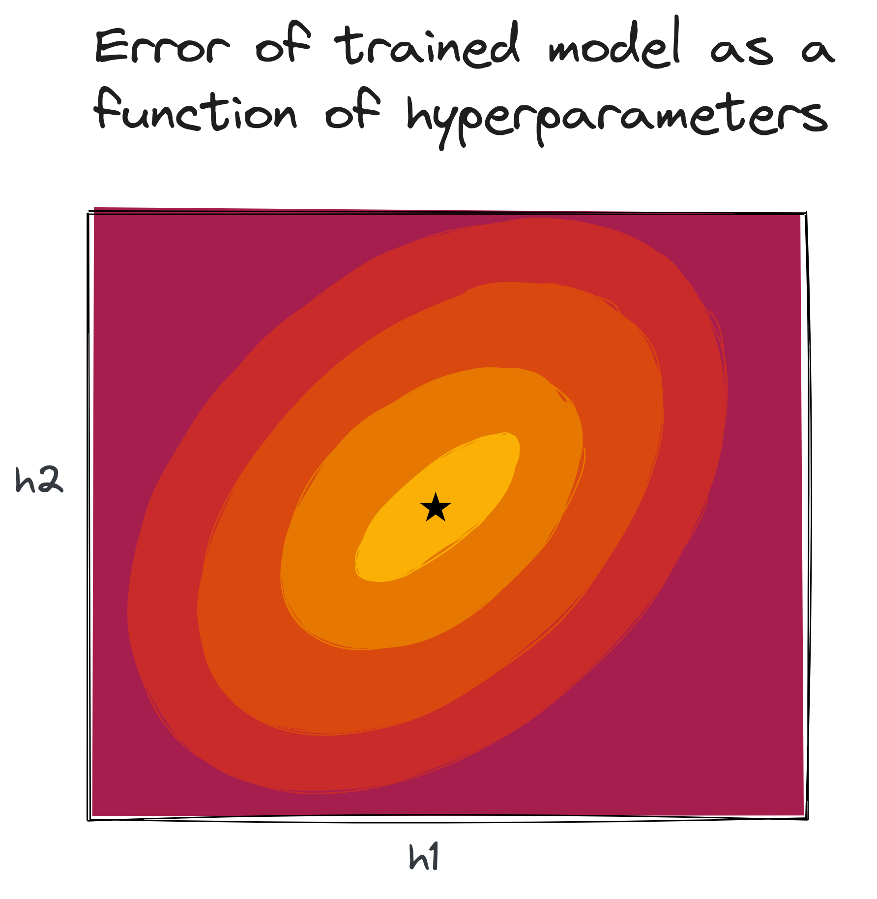
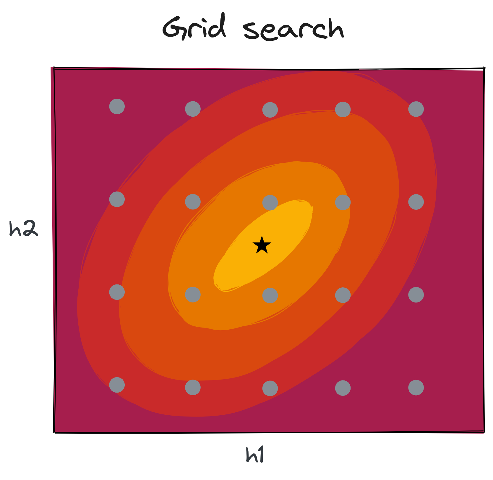
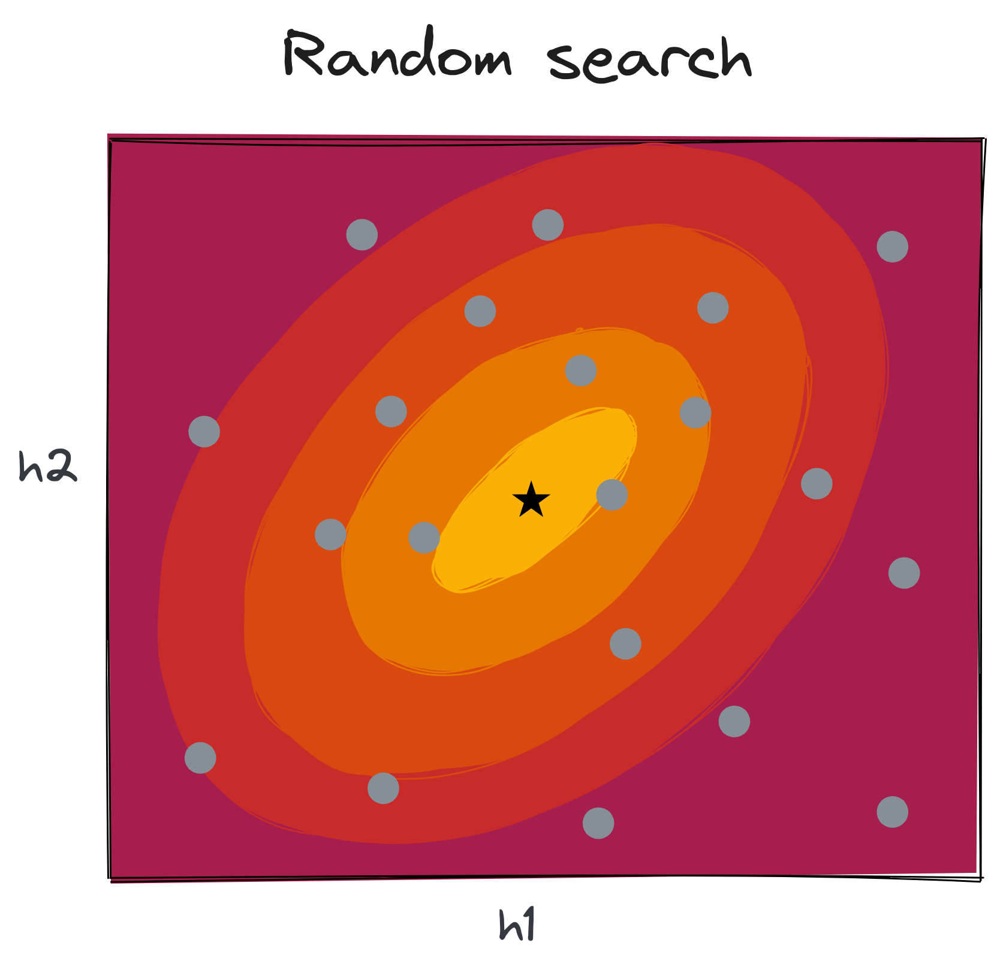
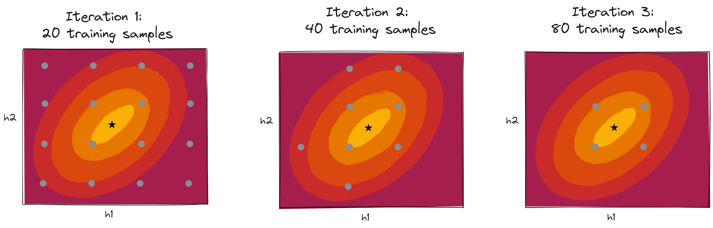
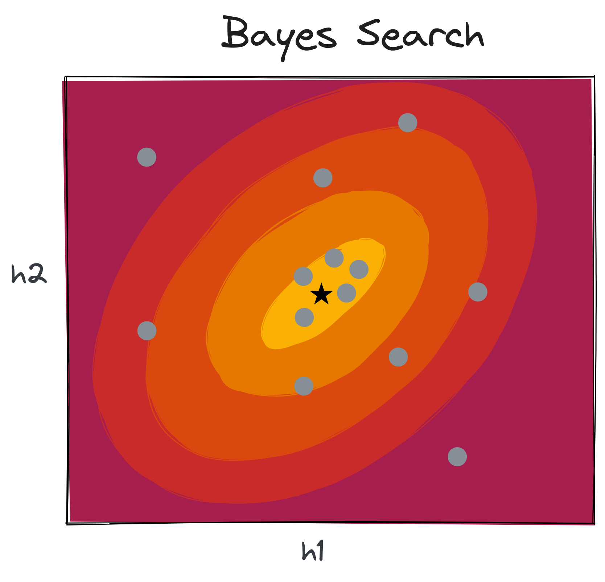

Hyperparameter optimization
Fraida Fund
Recall: Supervised learning recipe
Get
data
:
\((\mathbf{x_i}, y_i), i=1,2,\cdots,n\)
Choose a
model
:
\(\hat{y_i} = f(\mathbf{w}, \mathbf{x_i})\)
Choose a
loss function
Find model
parameters
that minimize loss
Hyperparameter optimization

Hyperparameter search space
Grid search

Grid search
Random search

Random search
Successive halving

Successive halving with grid search
Adaptive search (Bayes search)

Bayes search